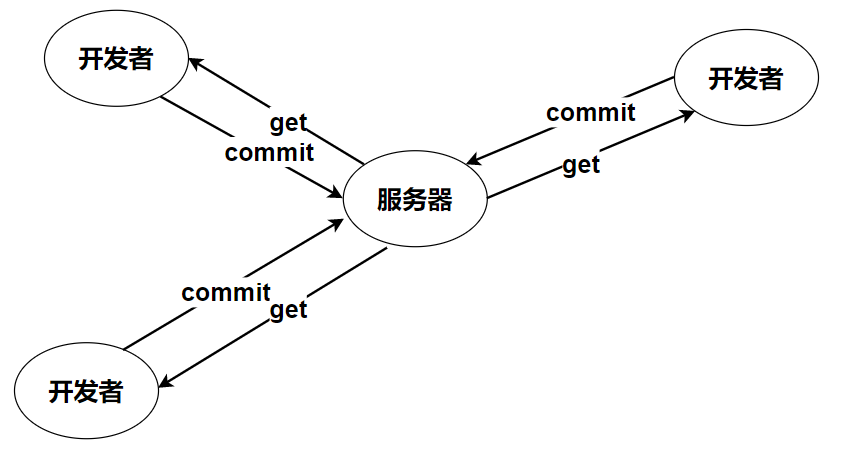
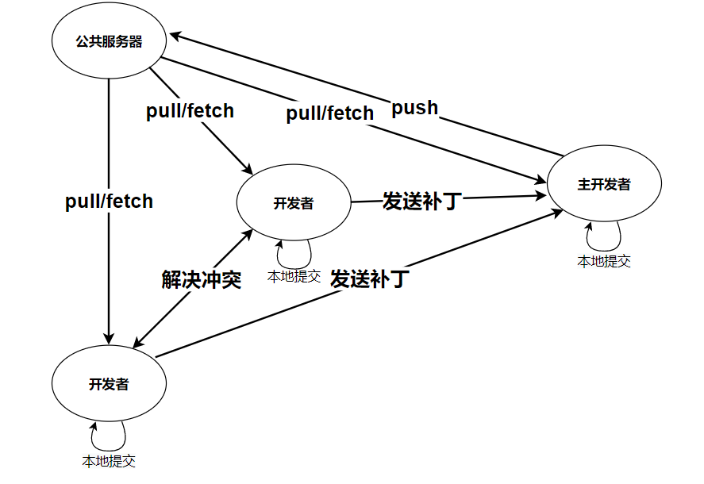

Git与SVN的差异比较

文章目录
SVN
SVN是Subversion的简称，是一个开放源代码的版本控制系统，支持大多数常见的操作系统。
作为一个开源的版本控制系统，Subversion管理着随时间改变的数据。
这些数据放置在一个中央资料档案库(repository)中。这个档案库很像一个普通的文件服务器，不过它会记住每一次文件的变动。
这样你就可以把档案恢复到旧的版本，或是浏览文件的变动历史。
Subversion是一个通用的系统，可用来管理任何类型的文件，其中包括了程序源码。
集中式管理的工作流程如下图：

集中式代码管理的核心是服务器，所有开发者在开始新一天的工作之前必须从服务器获取代码，然后开发，最后解决冲突，提交。所有的版本信息都放在服务器上。如果脱离了服务器，开发者基本上可以说是无法工作的。
SVN 的优缺点：
SVN对中文支持好，操作简单，使用没有难度，美工人员，产品人员，测试人员，实施人员都可轻松上手。使用界面统一，功能完善，操作方便。
SVN的特点概括起来主要由以下几条：
1.每个版本库有唯一的URL（官方地址），每个用户都从这个地址获取代码和数据；
2.获取代码的更新，也只能连接到这个唯一的版本库，同步以取得最新数据；
3.提交必须有网络连接（非本地版本库）；
4.提交需要授权，如果没有写权限，提交会失败；
5.提交并非每次都能够成功。如果有其他人先于你提交，会提示“改动基于过时的版本，先更新再提交”… 诸如此类；
6.冲突解决是一个提交速度的竞赛：手快者，先提交，平安无事；手慢者，后提交，可能遇到麻烦的冲突解决。
Git
Git是一款免费.开源的分布式版本控制系统，用于敏捷高效地处理任何或小或大的项目
Git是一个开源的分布式版本控制系统，用以有效.高速的处理从很小到非常大的项目版本管理。Git 是 Linus Torvalds 为了帮助管理 Linux 内核开发而开发的一个开放源码的版本控制软件。
分布式相比于集中式的最大区别在于开发者可以提交到本地，每个开发者通过克隆（git clone），在本地机器上拷贝一个完整的Git仓库.
经典的git开发过程:

Git的功能特性：
从一般开发者的角度来看，git有以下功能：
1.从服务器上克隆完整的Git仓库（包括代码和版本信息）到单机上。
2.在自己的机器上根据不同的开发目的，创建分支，修改代码。
3.在单机上自己创建的分支上提交代码。
4.在单机上合并分支。
5.把服务器上最新版的代码fetch下来，然后跟自己的主分支合并。
6.生成补丁（patch），把补丁发送给主开发者。
7.看主开发者的反馈，如果主开发者发现两个一般开发者之间有冲突（他们之间可以合作解决的冲突），就会要求他们先解决冲突，然后再由其中一个人提交。如果主开发者可以自己解决，或者没有冲突，就通过。
8.一般开发者之间解决冲突的方法，开发者之间可以使用pull 命令解决冲突，解决完冲突之后再向主开发者提交补丁。
从主开发者的角度（假设主开发者不用开发代码）看，git有以下功能：
1.查看邮件或者通过其它方式查看一般开发者的提交状态。
2.打上补丁，解决冲突（可以自己解决，也可以要求开发者之间解决以后再重新提交，如果是开源项目，还要决定哪些补丁有用，哪些不用）。
3.向公共服务器提交结果，然后通知所有开发人员。
Git的优缺点：
对程序源代码进行差异化的版本管理，代码库占极少的空间。易于代码的分支化管理。不支持中文，图形界面支持差，使用难度大。不易推广。
Git特性：
1.Git中每个克隆(clone)的版本库都是平等的。你可以从任何一个版本库的克隆来创建属于你自己的版本库，同时你的版本库也可以作为源提供给他人，只要你愿意。
2.Git的每一次提取操作，实际上都是一次对代码仓库的完整备份。提交完全在本地完成，无须别人给你授权，你的版本库你作主，并且提交总是会成功。
3.甚至基于旧版本的改动也可以成功提交，提交会基于旧的版本创建一个新的分支。
4.Git的提交不会被打断，直到你的工作完全满意了，PUSH给他人或者他人PULL你的版本库，合并会发生在PULL和PUSH过程中，不能自动解决的冲突会提示您手工完成。
5.冲突解决不再像是SVN一样的提交竞赛，而是在需要的时候才进行合并和冲突解决。
总之，公司的开发团队在进行的项目开发管理时，svn是更好的选择，团队成员共同维护公司的中心版本。
若是开源项目，则git更加适合，每个人都可以维护自己专属的版本，同时有github开源社区支持。
SVN和Git的区别：
1.SVN属于集中化的版本控制系统，有个不太精确的比喻:SVN = 版本控制+ 备份服务器
SVN使用起来有点像是档案仓库的感觉，支持并行读写文件，支持代码的版本化管理，功能包括取出.导入.更新.分支.改名.还原.合并等。
Git是一个分布式版本控制系统，操作命令包括：clone,pull,push,branch,merge,push,rebase，Git擅长的是程序代码的版本化管理。
2.GIT跟SVN一样有自己的集中式版本库或服务器。但Git更倾向于被使用于分布式模式，也就是每个开发人员从中心版本库/服务器上chect out代码后会在自己的机器上克隆一个自己的版本库。可以这样说，如果你被困在一个不能连接网络的地方时，就像在飞机上，地下室，电梯里等，你仍然能够提交文件，查看历史版本记录，创建项目分支等。对一些人来说，这好像没多大用处，但当你突然遇到没有网络的环境时，这个将解决你的大麻烦。
3.GIT把内容按元数据方式存储，而SVN是按文件
所有的资源控制系统都是把文件的元信息隐藏在一个类似.svn,.cvs等的文件夹里。如果你把.git目录的体积大小跟.svn比较，你会发现它们差距很大。因为,.git目录是处于你的机器上的一个克隆版的版本库，它拥有中心版本库上所有的东西，例如标签、分支、版本记录等。
4.分支在SVN中一点不特别，就是版本库中的另外的一个目录。如果你想知道是否合并了一个分支，你需要手工运行像这样的命令svn propget svn:mergeinfo，来确认代码是否被合并。然而，处理GIT的分支却是相当的简单和有趣。你可以从同一个工作目录下快速的在几个分支间切换。你很容易发现未被合并的分支，你能简单而快捷的合并这些文件。
5.GIT没有一个全局的版本号，而SVN有
目前为止这是跟SVN相比GIT缺少的最大的一个特征。你也知道，SVN的版本号实际是任何一个相应时间的源代码快照。我认为它是从CVS进化到SVN的最大的一个突破。因为GIT和SVN从概念上就不同，我不知道GIT里是什么特征与之对应。如果你有任何的线索，请在评论里奉献出来与大家共享。
6.GIT的内容完整性要优于SVN：
GIT的内容存储使用的是SHA-1哈希算法。这能确保代码内容的完整性，确保在遇到磁盘故障和网络问题时降低对版本库的破坏。
适用范围：
1.适用对象不同。Git适用于参与开源项目的开发者。他们由于水平高，更在乎的是效率而不是易用性。SVN则不同，它适合普通的公司开发团队。使用起来更加容易。
2.使用的场合不同。Git适用于通过Internet，有多个开发角色的单个项目开发，SVN适合企业内部由项目经理统一协调的多个并行项目的开发。
3.权限管理策略不同。Git没有严格的权限管理控制，只要有帐号，就可以导出.导入代码，甚至执行回退操作。SVN则有严格的权限管理，可以按组.按个人进行针对某个子目录的权限控制。区分读.写权限。更严格的，不支持回退操作。保证代码永远可以追踪。
4.分支(branch)的使用范围不一样。Git中，你只能针对整个仓库作branch,而且一旦删除，便无法恢复。而SVN中，branch可以针对任何子目录，它本质上是一个拷贝操作。所以，可以建立非常多.层次性的branch,并且，在不需要时将其删除，而以后需要时只要checkout老的SVN版本就可以了。
5.基于第三点，Git适用于单纯的软件项目，典型的就是一些开源项目，比如Linux内核.busybox等。相反，SVN擅长多项目管理。比如，你可以在一个SVN仓库中存放一个手机项目的bsp/设计文档/文件系统/应用程序/自动化编译脚本，或者在一个SVN中存放5款手机项目的文件系统。git中必须建立n(项目数)*m（组件数）个仓库。SVN中只需要最多n或者m个就可以了。
6.Git使用128位ID作为版本号，而且checkout时要注明是哪个branch,而SVN使用一个递增的序列号作为全局唯一的版本号，更加简明易懂。虽然可以使用gittag来建立一些文字化的别名，但是毕竟那只是针对特殊版本。
7.可跟踪性，git的典型开发过程为：建立分支，进行开发，提交到本地master，删除分支。这样做的后果是以前的修改细节会丢失。而在SVN下做同样的事情，不会丢失任何细节。这里是一个有趣的链接，表明了git下典型的工作方式：（以master为核心，不断创建新branch,删除旧branch):
8.局部更新，局部还原。SVN由于是在每个文件夹建立一个.svn文件夹来实现管理，所以可以很简单实现局部更新或者还原。假如你只希望更新某些部分，则svn可以很好实现。同时代码写错了，同时可以很好实现局部还原，当然git也可以通过历史版本还原，但是无法简单地实现局部还原。
文章作者 Pure3417
上次更新 2023-01-25